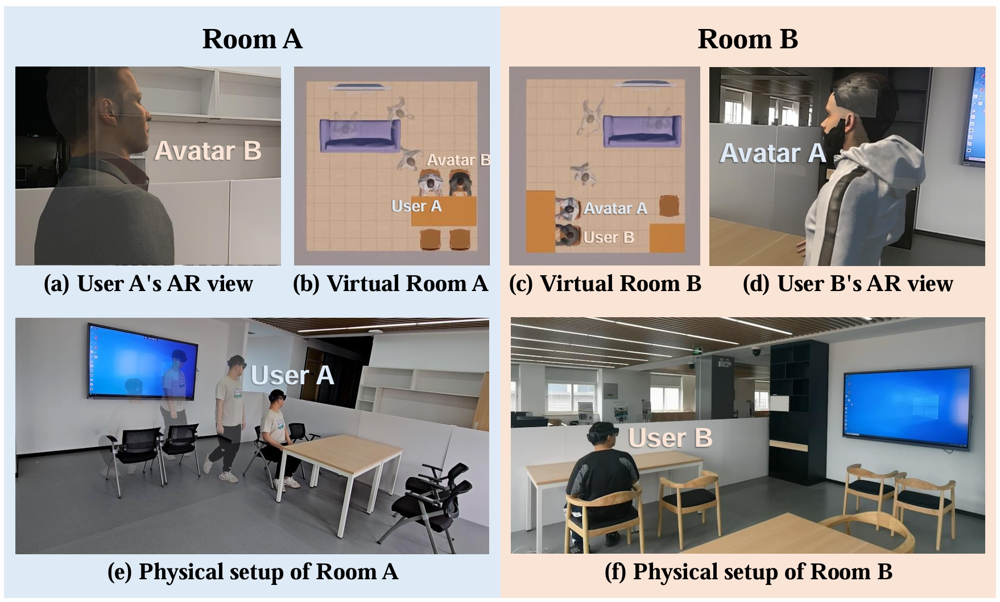
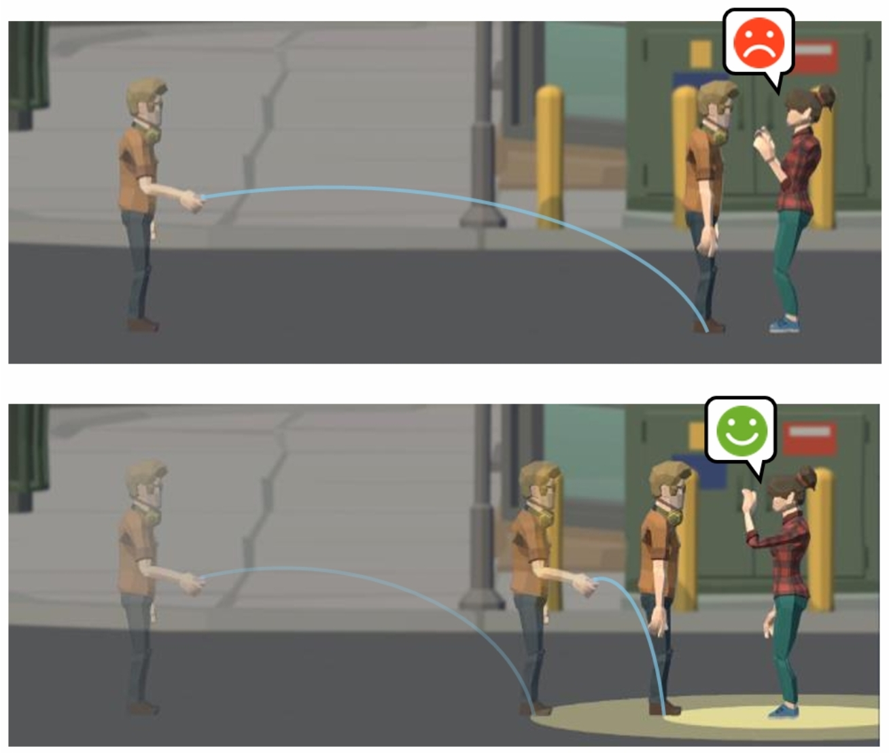
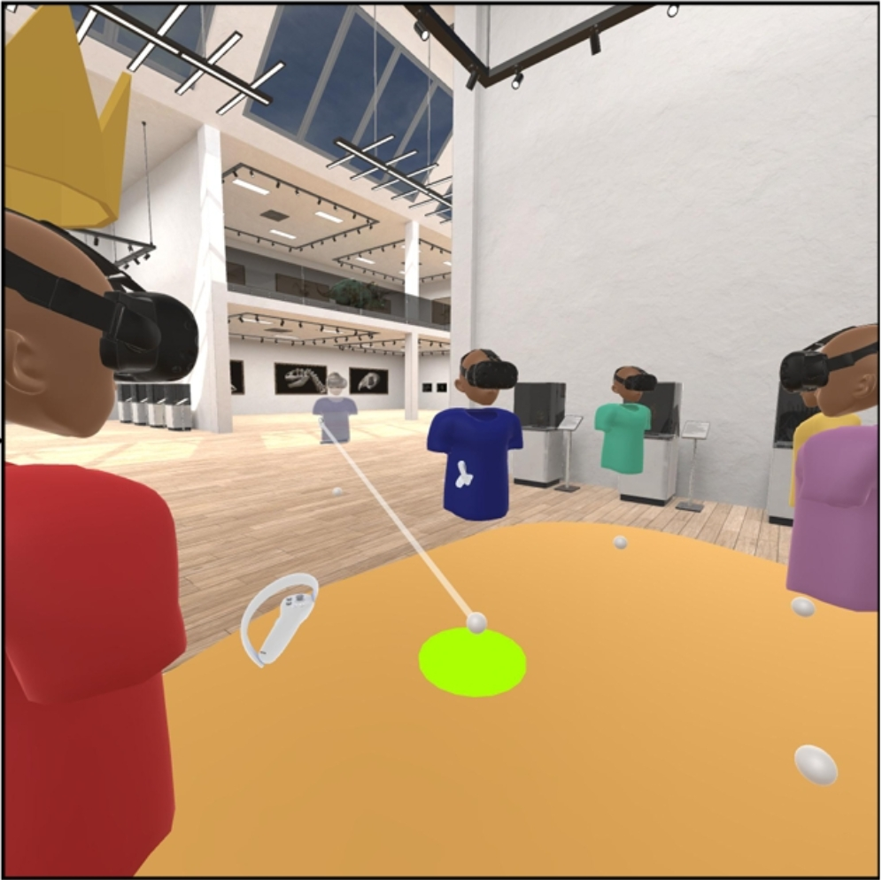
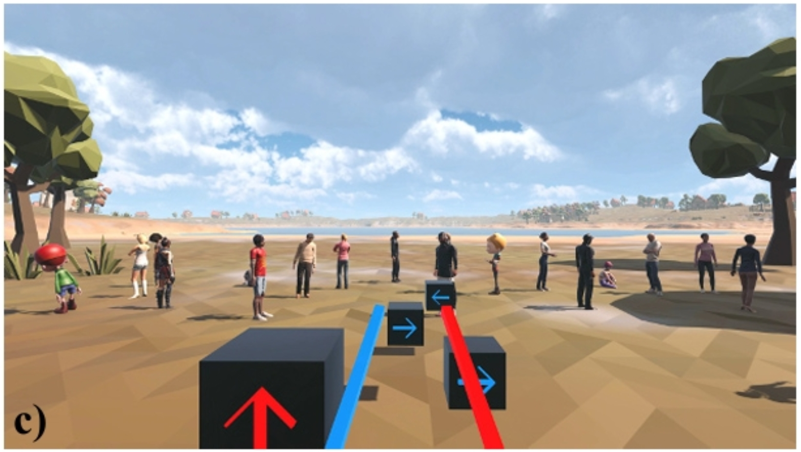
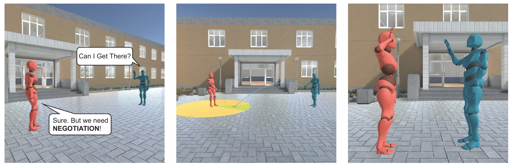
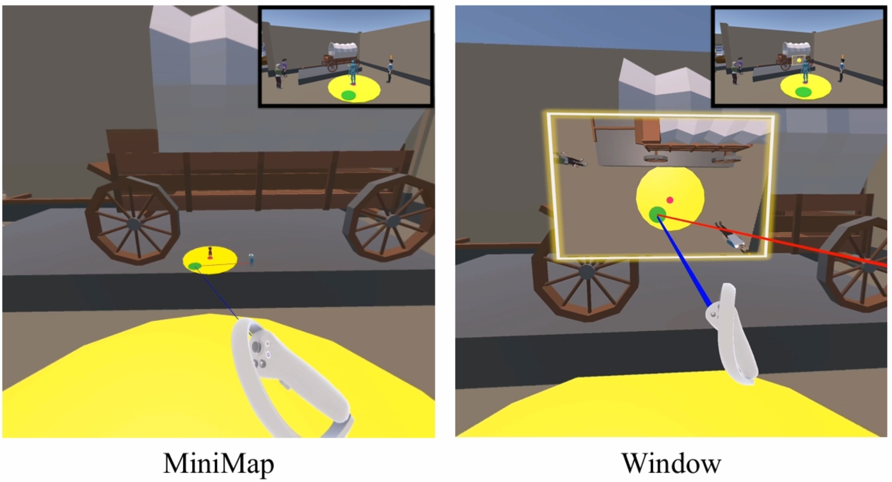
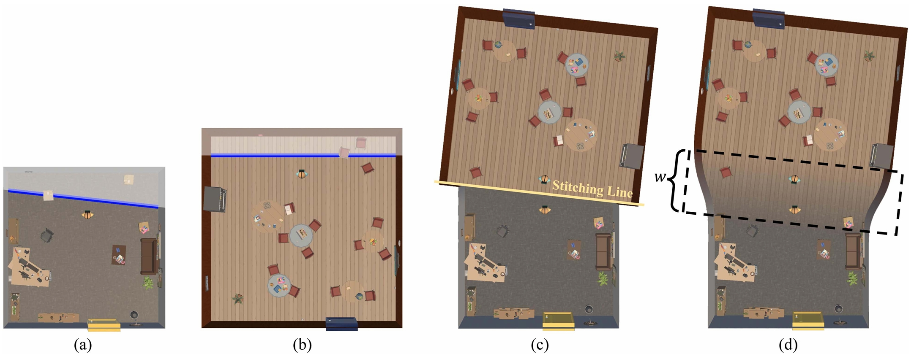
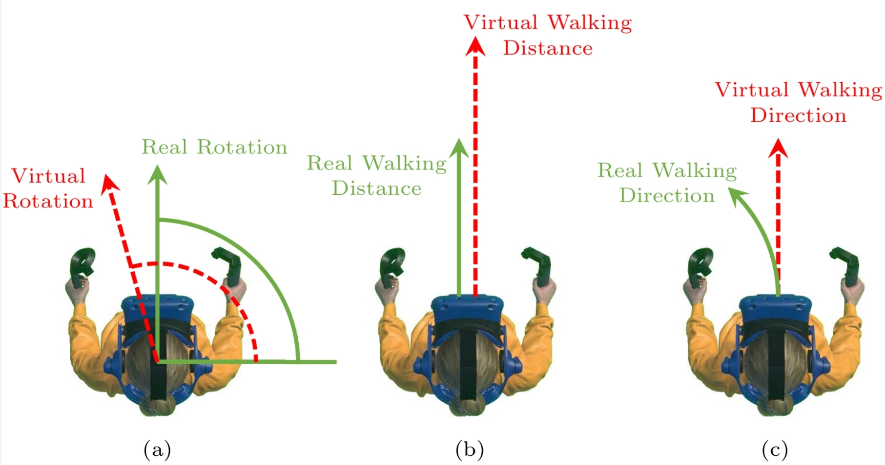
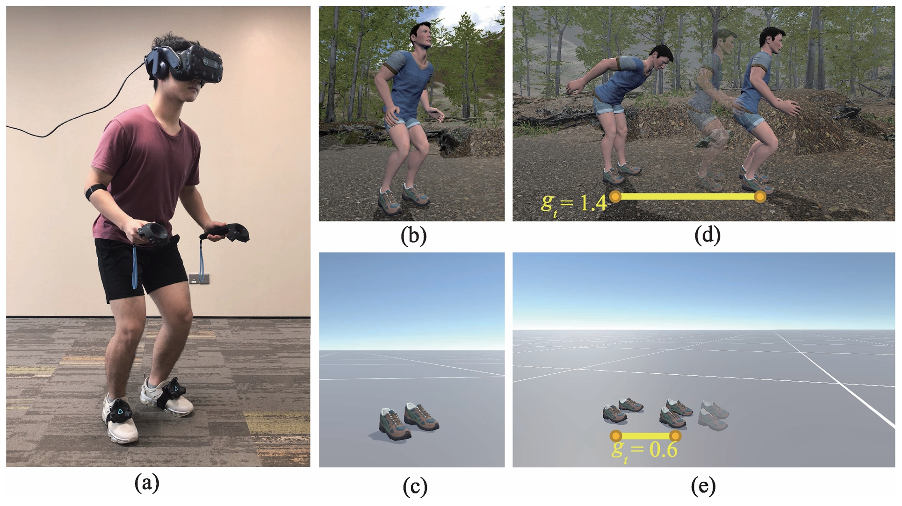
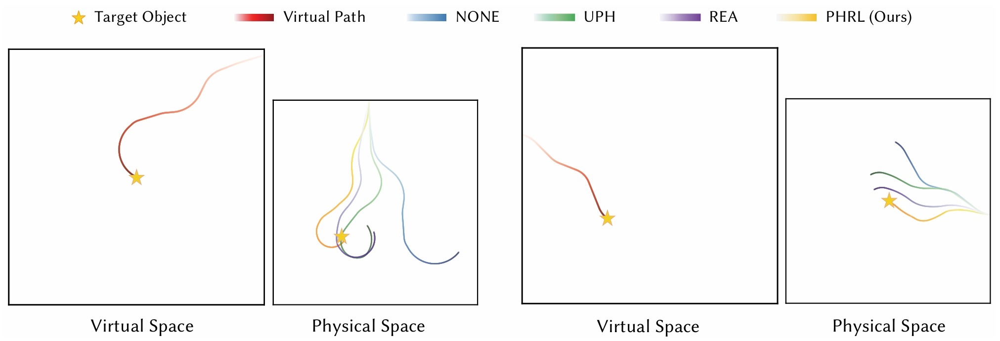

About Me
I am currently a Postdoctoral Researcher at the Visual Media Research Center, Tsinghua University, where I am supervised by Professor Shimin Hu. I received both my B.S. and Ph.D. degrees in Computer Science from Beihang University. My doctoral studies were advised by Professor Qinping Zhao and guided by Professor Miao Wang. My doctoral research covered diverse areas in VR/AR, including panoramic video exploration, redirected walking, and multi-user collaboration.
My research interests lie broadly in Virtual and Augmented Reality (VR/AR), with a particular focus on virtual avatar interaction, presentation, and perception.
Email: liyijun@mail.tsinghua.edu.cn
Publications
-
Semantics-Aware Avatar Locomotion Adaption for Indoor Cross-Scene AR Telepresence.Yi-Jun Li, Hao-Zhong Yang, Wentong Shu, Miao Wang.IEEE Transactions on Visualization and Computer Graphics (TVCG 2025) (CCF-A)
-
SafeTeleport: Potential Field-Guided Teleportation for Personal Space Protection in Social VR.Yi-Jun Li, Sen-Zhe Xu, Wentong Shu, Haozhong Yang, Zinan Han, Miao Wang, Song-Hai Zhang.IEEE International Symposium on Mixed and Augmented Reality (ISMAR 2025) (CCF-B)
-
Negotiated User-to-Group Teleportations in Social VR.Wentong Shu, Yi-Jun Li, Haozhong Yang, Zinan Han, Frank Steinicke, Miao Wang.IEEE Transactions on Visualization and Computer Graphics (TVCG 2025) (CCF-A) (ISMAR 2025 Best Paper)
-
Exploring the Influence of Crowd Size across Different Tasks on User Performance, Experience and Social Presence in Shared Virtual Environments.Hao-Zhong Yang, Yi-Jun Li, Zinan Han, Wentong Shu, Miao Wang.IEEE International Symposium on Mixed and Augmented Reality (ISMAR 2025) (CCF-B)
-
Can I Get There? Negotiated User-to-User Teleportations in Social VR.Miao Wang, Wentong Shu, Yi-Jun Li, Wanwan Li.IEEE Transactions on Visualization and Computer Graphics (TVCG 2025) (CCF-A) (IEEE VR 2025 Best Paper)
-
Negotiating Without Turning: Exploring Rear-Space Interaction for Negotiated Teleportation in VR.Haozhong Yang, Wentong Shu, Yi-Jun Li, Miao Wang.International Conference on eXtended Reality (ICXR 2025)
-
SceneFusion: Room-Scale Environmental Fusion for Efficient Traveling Between Separate Virtual Environments.Miao Wang, Yi-Jun Li, Jinchuan Shi, and Frank Steinicke.IEEE Transactions on Visualization and Computer Graphics (TVCG 2023) (CCF-A)
-
 Bullet comments for 360 video.Yi-Jun Li, Jinchuan Shi, Fang-Lue Zhang, and Miao Wang.IEEE Virtual Reality (IEEE VR 2022) (CCF-A)
Bullet comments for 360 video.Yi-Jun Li, Jinchuan Shi, Fang-Lue Zhang, and Miao Wang.IEEE Virtual Reality (IEEE VR 2022) (CCF-A) -
A Comprehensive Review of Redirected Walking Techniques: Taxonomy, Methods, and Future Directions.Yi-Jun Li, Frank Steinicke, and Miao Wang.Journal of Computer Science and Technology (JCST 2022) (CCF-B)
-
 Detection thresholds with joint horizontal and vertical gains in redirected jumping.Yi-Jun Li, De-Rong Jin, Miao Wang, Jun-Long Chen, Frank Steinicke, Shi-Min Hu, Qinping Zhao.IEEE Virtual Reality (IEEE VR 2021) (CCF-A)
Detection thresholds with joint horizontal and vertical gains in redirected jumping.Yi-Jun Li, De-Rong Jin, Miao Wang, Jun-Long Chen, Frank Steinicke, Shi-Min Hu, Qinping Zhao.IEEE Virtual Reality (IEEE VR 2021) (CCF-A) -
Effects of virtual environment and self-representations on perception and physical performance in redirected jumping.Yi-Jun Li, Miao Wang, De-Rong Jin, Frank Steinicke, Qinping Zhao.Virtual Reality & Intelligent Hardware (VRIH 2021)
-
A reinforcement learning approach to redirected walking with passive haptic feedback.Ze-Yin Chen, Yi-Jun Li, Miao Wang, Frank Steinicke, Qinping Zhao.IEEE International Symposium on Mixed and Augmented Reality (ISMAR 2021) (CCF-B)
-
 VR content creation and exploration with deep learning: A survey.Miao Wang, Xu-Quan Lyu, Yi-Jun Li, Fang-Lue Zhang.Computational Visual Media (CVM 2020) (CCF-C)
VR content creation and exploration with deep learning: A survey.Miao Wang, Xu-Quan Lyu, Yi-Jun Li, Fang-Lue Zhang.Computational Visual Media (CVM 2020) (CCF-C)